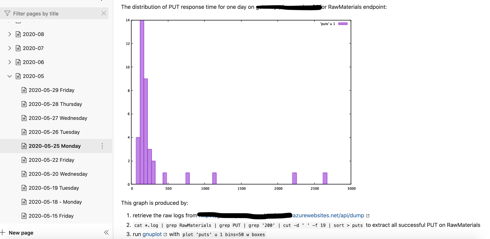

Team Practices: Daily Log
Writing a personal diary is pretty commonplace and there exists quite a few tools out there to do that. I personally favor Emacs for casual personal journalling and have been using org-mode since at least 2014, and some other tools prior to that like remember.el. For a few years now, I have been trying to extend that practice from the individual to the collective by writing a Team’s Log. I stole the idea from a talk Dan North gave where he mentioned the Captain’s Log as one of the “advanced agile” or “post-agile” practices he thought effective to improve a team’s efficiency and effectiveness.
Why do it?
I usually work in teams on software products that are created, evolved and maintained over the course of months, years or even a lifetime. I often feel the need to informations from the past, for various reasons:
- to understand the context in which some decision was made,
- to check if an issue I am working on is really the same issue I worked on a while ago,
- to find some details of a discussion that did not translate to a commit message or a specific wiki page,
- to quickly catch-up with the team when I have been off for a few days or even weeks,
- …
More generally, I like the idea of keeping in a written form something that I call a Collective Stream of Consciousness, a collection of more or less detailed contextual notes that detail what we think of a problem at some point in time, how we resolved some issue, even which sequence of commands or actions we had to run in order to reach some conclusion or extract some data.
Writing things is essential to structure, learn and share. In his series of book on groupthink and decision making, Christian Morel motivates the importance of writing things down for organisations in order to breed a culture of safety and continuous learning. By insisting that knowledge be written, structured, and continuously read and reviewed, organisations build an operational Body of Knowledge that helps turn unexpected or novel events into routine, spreads knowledge among the organisation’s members, speeds up newcomers onboarding.
In the first volume series of book on Quality Software Management, System Thinking, Jerry Weinberg proposes a hierarchy of patterns for organisations that ranges from the Oblivious to the Congruent. A key factor in taming chaos is collecting information, data, and making that information and data open for everyone to see. At first, we might fail to collect the right data or measure the right thing, and we might fail to collect it in the right way, confusing precision, accuracy and relevance. But this is the first step towards improving the level of understanding and control we have on the process and the Culture of the organization.
I view building this Collective Stream of Consciousness as a way to gather raw material for further analysis and synthesis: By writing things down, I am more prone to memorize events and notice patterns that can later be refined into more specific documents.
How to do it?
Practice
My current practice is actually pretty simple: In the team’s wiki, there is one page for each (working) day, which is used by all team members as a shared notebook to log what they do, problems they have, solutions they find… When a month is over, we move relevant pages
Here is a screen capture from our team’s wiki (in this case Azure DevOps) showing a random page’s content:

In this case, I was trying to understand why tests were slow and I graphed the distrbution of execution times for “writes” using some GNUPlot script. This picture also shows the tree of daily log entries, with daily pages “archived” under each month.
Other category of fragments I1 write in the log are:
- Action plan for the day, often listing actions people talked about in the daily meeting,
- Comments and “narratives” while working on some issue, along with a link to the issue tracker,
- Details about operations, like configuring a service or troubleshooting a malfunction in Azure, complete with detailed commands run, output, problems and solutions I faced….
- Meeting minutes, which I sometimes move to their own page under the
Meetingssection when they are recurring meetings (retrospectives, sprint planning), - Random thoughts on some topic which does not warrant having its own page yet.
Pair Programming lends itself nicely to journaling: The navigator can write down decisions, problems, actions, or questions while the driver writes code. When switching role, the new navigator can quickly go through the log and catch up with previous navigator’s thought process.
I try to use as much hyperlinks to other parts of our “information system” (issue tracker, code repository, CI, tests reports) as I can in order to enrich the context and allow readers, whether other team members or my future self, to be able to gather as much details as they need to make this information useful.
Tools
As mentioned previously, in my current team we are using the standard DevOps Wiki as our infrastructure is 100% Azure-based. Over the past few years, I have tried various options:
- As an avid Emacs and casual org-mode user, I initially tried to maintain an org-mode journal in the source tree, committing it like any other piece of documentation. While this works fine when working alone, it does not scale to multiple users and team use due to merge conflicts: Everyone is editing the same file over and over, usually in close places,
- An online wiki is easier to use but most wikis out there do not support concurrent editing of same page by different users, thus leading to the same merge conflict issues. Moreover, wikis are usually edited directly in the browser which means I need to switch tools when programming,
- Google docs2 provides good support for collaborative online editing. This is my go-to option when there’s no in-house Wiki solution as wiki are more hyperlinks-friendly esp. when integrated in a development environment,
- Out of online tools I have used, Notions offers the best experience when working in a larger team with 2 or 3 groups of people simultaneously editing the same daily log page.
I have yet to discover the perfect tool to support that practice. Such a tool would at least:
- Support collaborative concurrent editing of the same “note” with automatic conflicts resolution,
- Provide seamless integration into common tools used in software development in order to easily capture contextual information when creating notes,
- Enable easy linking to other notes through completion and navigation,
- Efficiently index notes and provide powerful search capabilities.
org-roam is a recent evolution of org-mode inspired by the Zettelkasten method that provides some of these capabilities, but it does not provide collective editing support nor online storage and retrieval of notes.
Assessment
I have found the practice of writing a Team’s log very helpful in various circumstances, whether it be to lookup some command I have used before, to investigate recurring bugs and issues, or more generally to dump random ideas and thoughts that sometimes happen to be useful to me or teammates. Writing things down helps structure one’s thought process bringing order and persistance to the somewhat confusing, idiosyncratic and transient stream of consciousness. This is not only valuable at a personal level but also at a the team’s level as it fosters key eXtreme Programming practices like Collective Code Ownership and Coding Standards.
Turning implicit assumptions, conclusions, perceptions, and ideas into an explicit Stream of consciousness takes the collective to another level whereby it’s not only the Code that’s collectively owned but the process that produces the code, which unlocks the potential for the organisation, at the team level or higher, to apply pattern 3, 4 or even 5 organisations.
Of course, this only works if all the team’s members are willing to engage with that practice, writing and reading the log and actively curating its content.